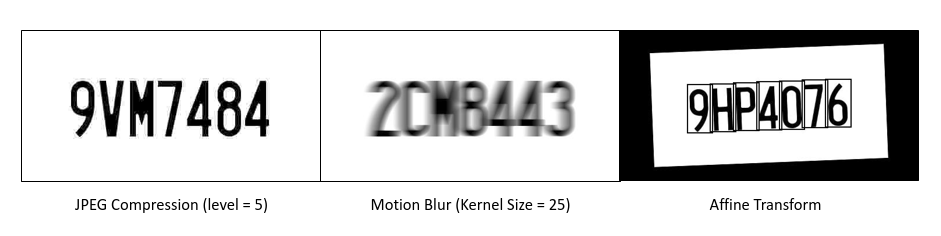
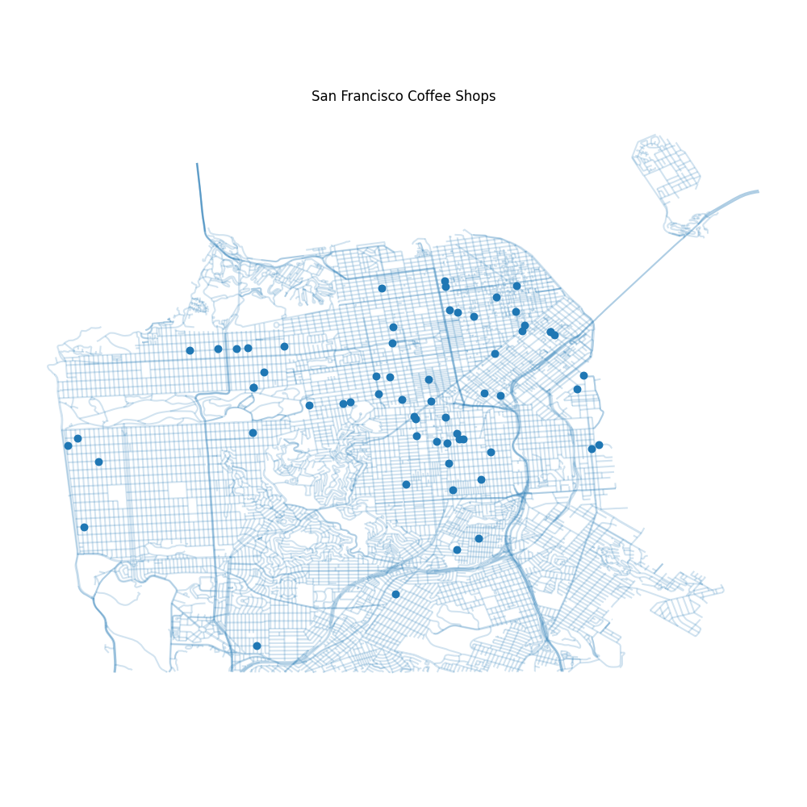
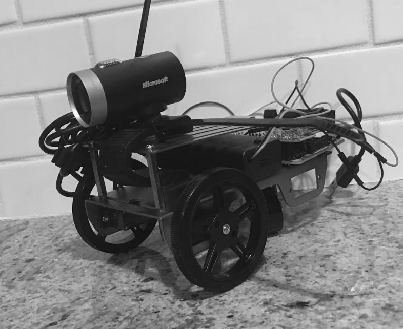

Computational geometry
Toolpath generation, polygon offsetting, region decomposition, and robust handling of complex contour geometry.
Senior Software Engineer · Algorithms
I’m an embedded software and algorithms engineer specializing in computational geometry, computer vision, robotics, and autonomous systems.
What I do
My work spans early technical exploration, production implementation, system integration, and real-world testing.
Toolpath generation, polygon offsetting, region decomposition, and robust handling of complex contour geometry.
Image processing, optical flow, and deep-learning systems built for constrained or imperfect inputs.
C++ and Python software for robotics, sensor platforms, flight testing, and data analysis.
Experience
Personal Projects
A selection of research and personal projects

Machine learning · Research
Master’s thesis developing a deep-learning framework for character recognition in degraded license plate imagery.

Geospatial · Open source
A hands-on collection of mapping experiments and tutorials for learning practical geospatial programming workflows.
